Digitale miljøvaredeklarationer og APIer
Digitale miljøvaredeklarationer og APIer
➡ Gennemgang af udvalgte EPD-udbydere
➡ Kort om EPD'er på digital format
➡ Søgning på ECO Portal
➡ Hvordan er en EPD struktureret i ILCD+EPD-formatet?
➡ Hvordan læser man den rå XML data?
➡ Hvordan får man adgang til ECO Portals API?
➡ Demo af et Python script
Forskellige EPD-aktører
 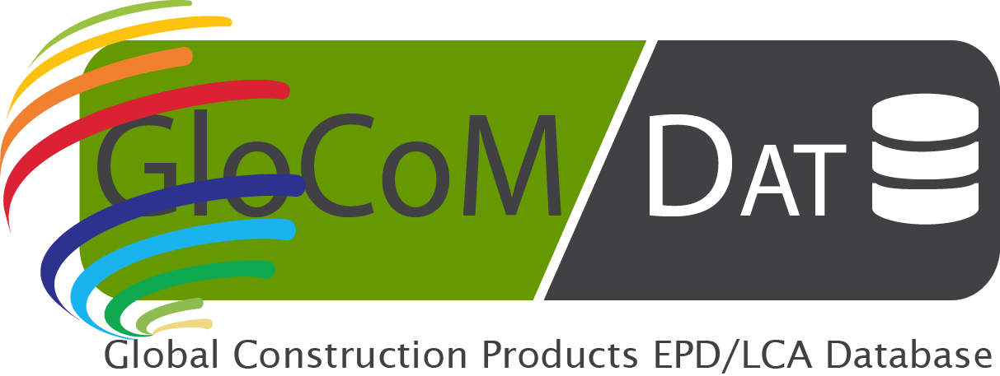
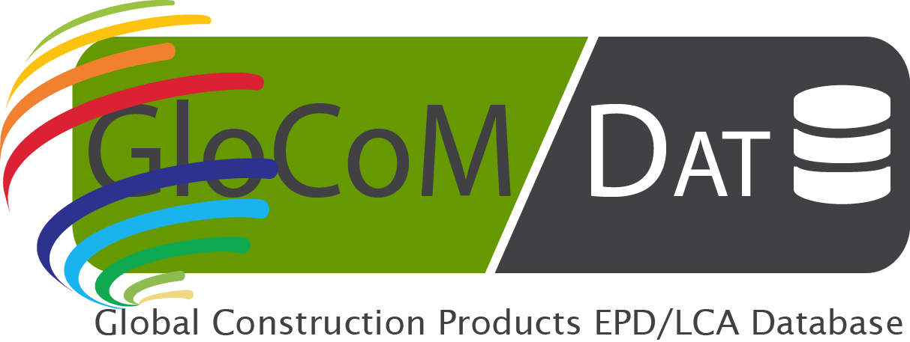
Forskellige EPD-aktører
| Nationale udbydere | Søgeplatforme | Udbydere af
original
generisk data |
Integrerede værktøjer |
|---|---|---|---|
|
|
|
|
Eksempel-EPD i HTML-formatet
Navn: "ABT Skanska Grön AsfaltBio Zero"
Udbyder: EPD-Norge
Digitale EPD-formater
ILCD og ILCD+EPD
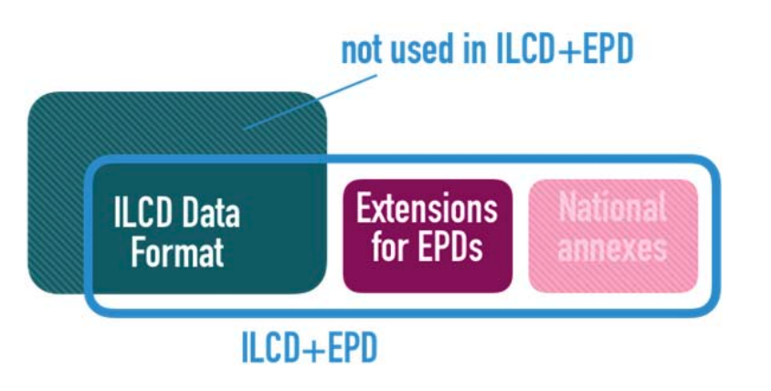ILCD og ILCD+EPD
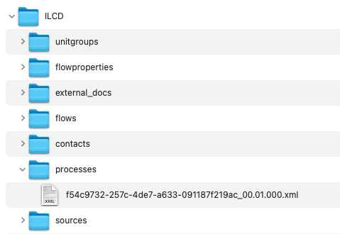Andre EPD-formater:
HTML
XML
CSV
JSON
Oversigt over udvalgte EPD-udbydere
Søgning på ECO Portal
Hvordan bruger man en API til at finde digitale miljøvaredata?
Forudsætninger
Forudsætninger
EDP i ILCD+EPD
EDP i ILCD+EPD
EDP i ILCD+EPD
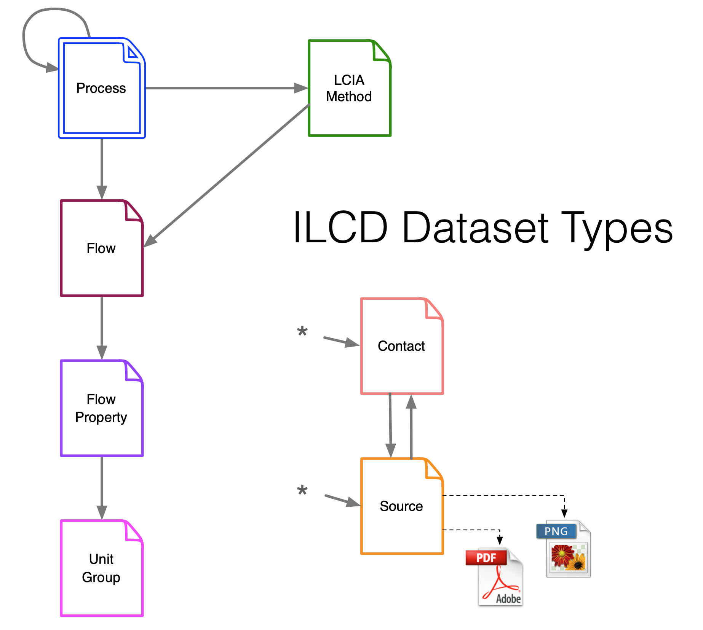 ILCD+EPD Data Format Primer Author: Oliver Kusche | ok*worxEDP i ILCD+EPD
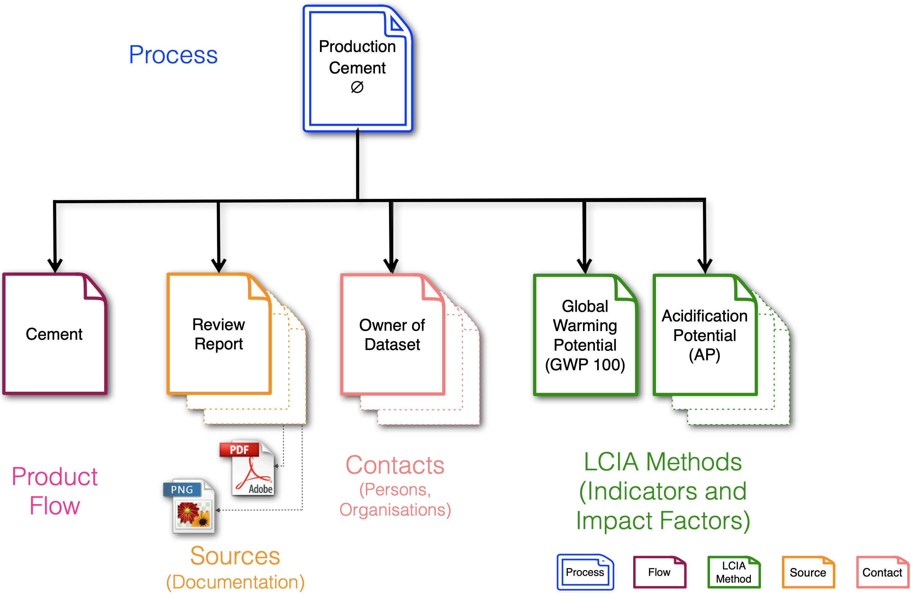 ILCD+EPD Data Format Primer Author: Oliver Kusche | ok*worxEDP i ILCD+EPD
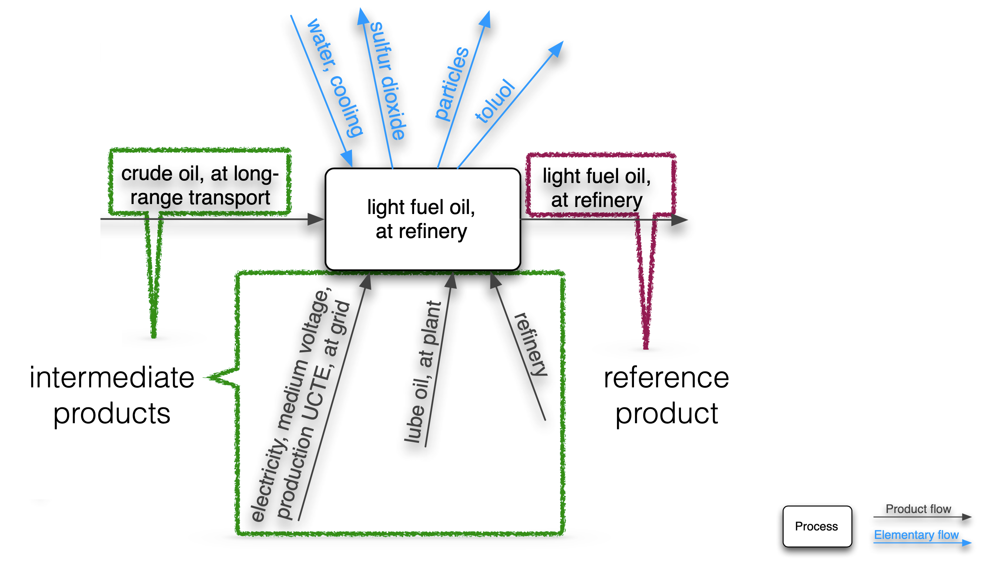 ILCD+EPD Data Format Primer Author: Oliver Kusche | ok*worxEDP i ILCD+EPD
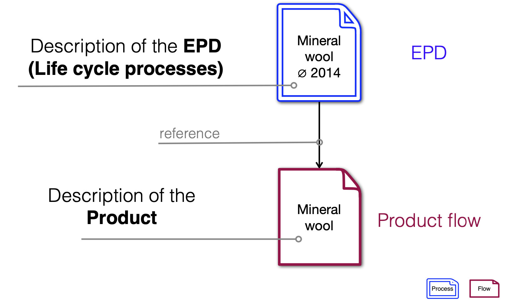 ILCD+EPD Data Format Primer Author: Oliver Kusche | ok*worxEDP i ILCD+EPD
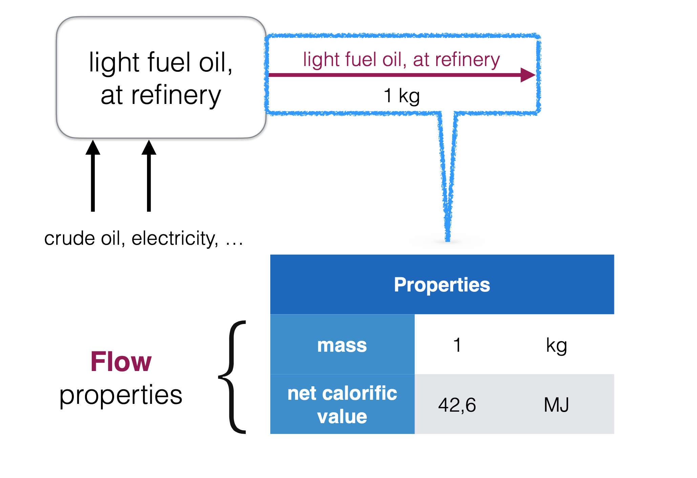 ILCD+EPD Data Format Primer Author: Oliver Kusche | ok*worxEDP i ILCD+EPD
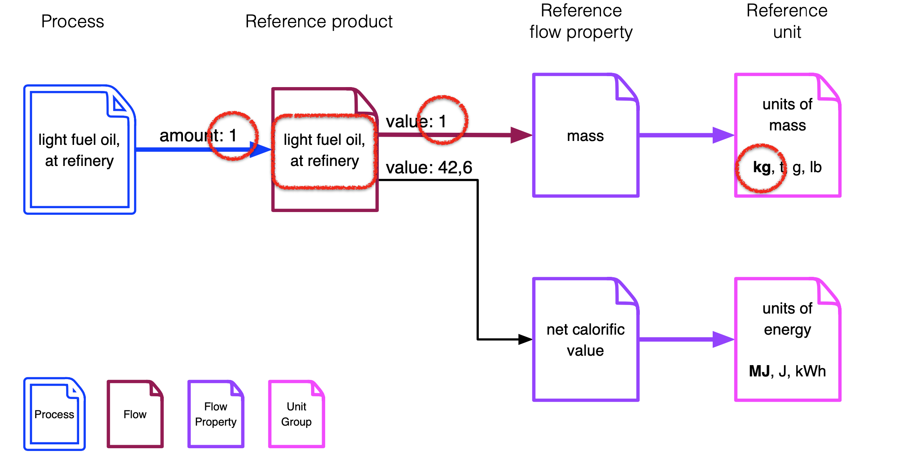 ILCD+EPD Data Format Primer Author: Oliver Kusche | ok*worxEDP i ILCD+EPD
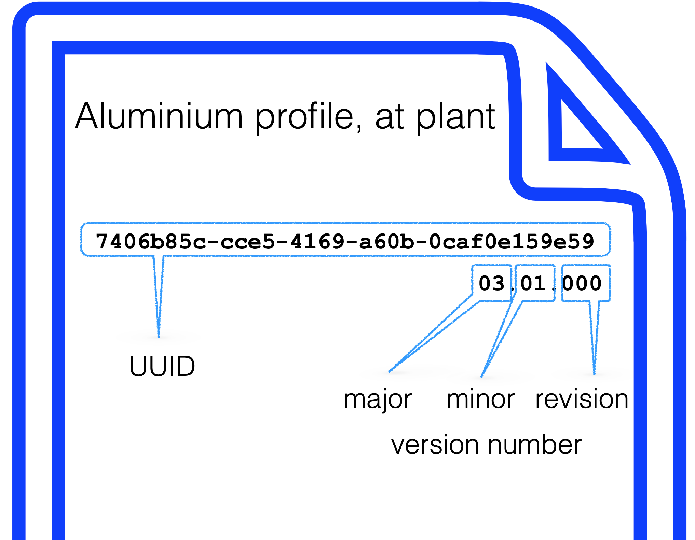 ILCD+EPD Data Format Primer Author: Oliver Kusche | ok*worxMere information om ILCD-formatet og andre nyttige links på EU-kommissionens hjemmeside
Hvordan ser den rå XML-data ud?
Hvordan ser den rå XML-data ud?
Hvordan ser den rå XML-data ud?
Oversigt
Hvordan ser den rå XML-data ud?
Process information
Hvordan ser den rå XML-data ud?
LCIA Results
Kort om Web APIer
HTTP-anmodning
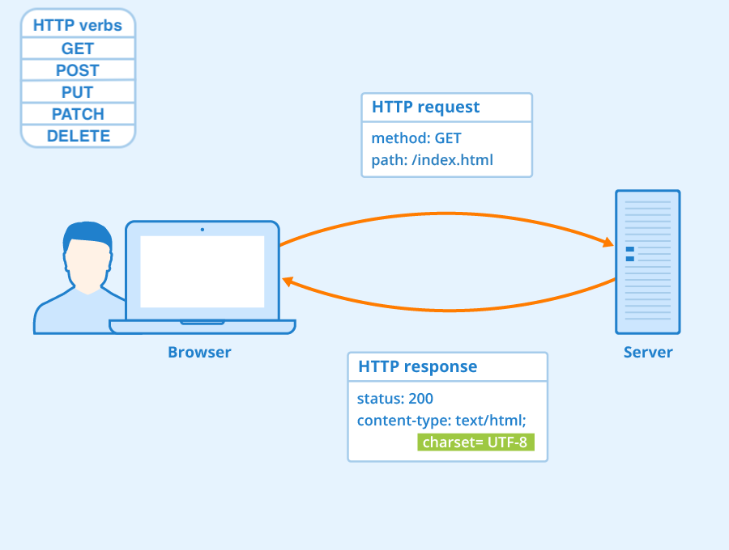 Derivative of "HTTP Header - Author: Seobility - License: CC BY-SA 4.0"Kort om Web APIer
GET-anmodning
 GET
Parameters -
Author: Seobility - License: CC BY-SA 4.0
GET
Parameters -
Author: Seobility - License: CC BY-SA 4.0
Kort om Web APIer
REST API
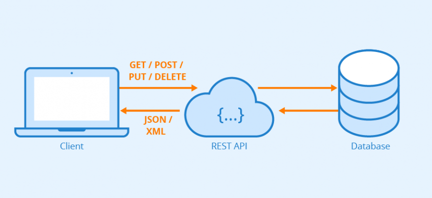 REST API - Author: Seobility - License: CC BY-SA 4.0ECO PORTAL API
ECO PORTAL API
Den bagvedliggende struktur
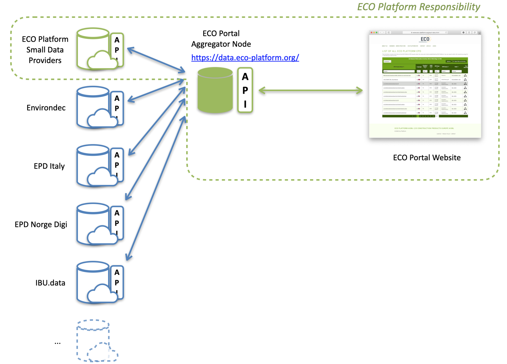 Fra: ECO Portal API - Quickstart GuideECO PORTAL API
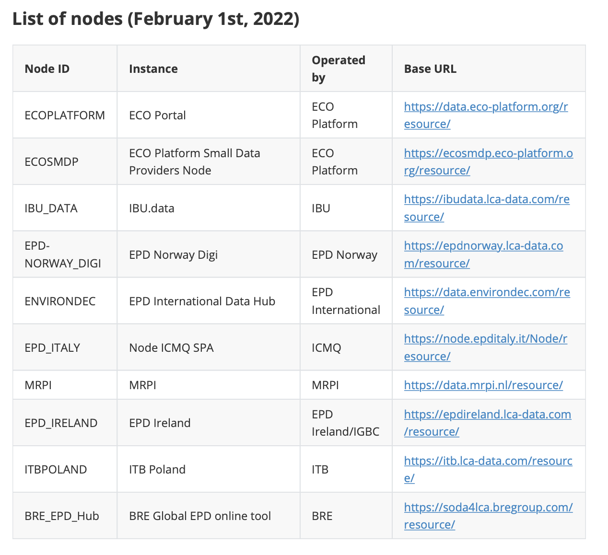 Fra: ECO Portal API - Quickstart GuideECO PORTAL API
soda4LCA
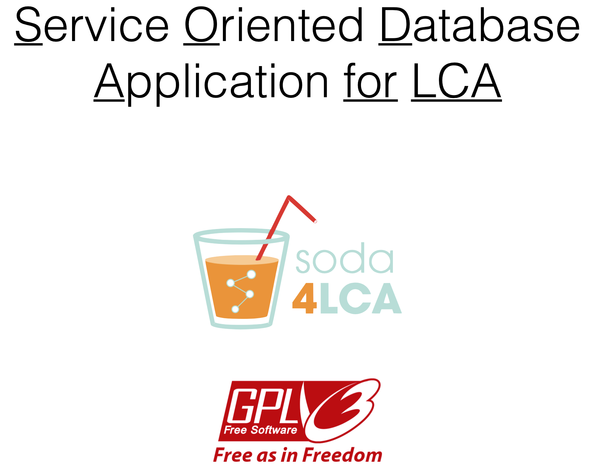ECO PORTAL API
soda4LCA
Dokumentationen kan findes på https://bitbucket.org/okusche/soda4lca/src/7.x-branch/Doc/src/Service_API/Service_API.md
ECO PORTAL API
Søg i en database
baseURL: "https://hostname.tld/resource/"
ECO PORTAL API
Få en bestemt EPD
baseURL: "https://hostname.tld/resource/"
ECO PORTAL API
Få en bestemt EPD
baseURL: "https://hostname.tld/resource/"
ECO PORTAL API
Opret bruger og generer API Access Token
ECO PORTAL API
Opret bruger og generer API Access Token
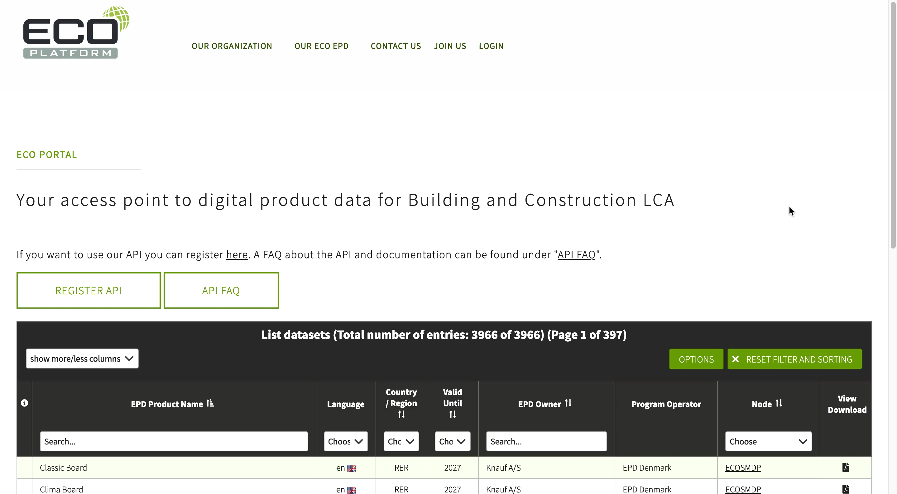API-kald i Python
Instaler biblioteker
API-kald i Python
Den simpleste anmodning
API-kald i Python
Den simpleste anmodning
API-kald i Python
Den simpleste anmodning
API-kald i Python
Autorisation
API-kald i Python
Søgningsparametre (queries)
Demo script
Demo script
Gem XML-fil
Demo script
Tilføj flere parametre
Demo script
Gem JSON-fil
Demo script
Søg på en bestemt EPD
Demo script
JSON-fil for en bestemt EPD
Demo script
Find et bestemt flow
Demo script
JSON-fil for et bestemt EPD flow
Demo script
Find specifikke informationer 1
Demo script
Find specifikke informationer 2
Demo script
Find specifikke informationer 3
Mere at gå videre med
Mere at gå videre med
ÖKOBAUDAT API
Mere at gå videre med
CSV Export
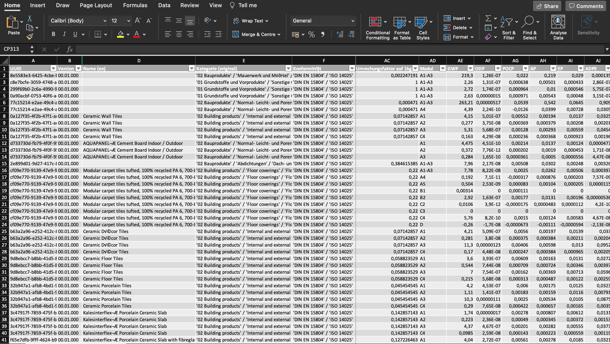Mere at gå videre med
ILCD Validation Tool
Kan findes på https://bitbucket.org/okusche/ilcdvalidationtool/src/master/
Mere at gå videre med
LCABygs JSON import
Kan findes på https://lcabyg.dk/da/usermanual/brugervejledning-andre-vaerktojer/